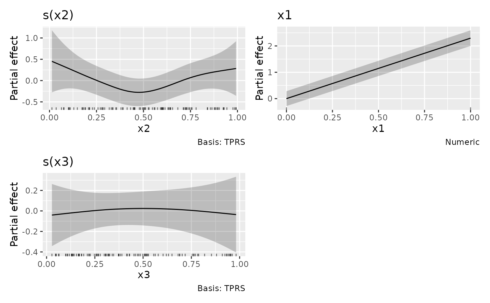

Provides draw() and assemble() methods for GAMLSS
(distributional GAMs) fitted by GJRM::gamlss(). assemble() returns the
individual plots; draw() arranges them using patchwork::wrap_plots().
Usage
# S3 method for class 'gamlss'
draw(
object,
scales = c("free", "fixed"),
ncol = NULL,
nrow = NULL,
guides = "keep",
widths = NULL,
heights = NULL,
...,
n = 100,
envir = NULL,
select = NULL,
parametric = NULL,
terms = NULL,
partial_match = FALSE,
wrap = TRUE
)
# S3 method for class 'gamlss'
assemble(
object,
scales = c("free", "fixed"),
...,
n = 100,
envir = NULL,
select = NULL,
parametric = NULL,
terms = NULL,
partial_match = FALSE
)Arguments
- object
a model, fitted by
GJRM::gamlss()- scales
character; should all univariate smooths be plotted with the same y-axis scale? If
scales = "free", the default, each univariate smooth has its own y-axis scale. Ifscales = "fixed", a common y axis scale is used for all univariate smooths.Currently does not affect the y-axis scale of plots of the parametric terms.
- ncol, nrow
numeric; the numbers of rows and columns over which to spread the plots
- guides
character; one of
"keep"(the default),"collect", or"auto". Passed topatchwork::plot_layout()- widths, heights
The relative widths and heights of each column and row in the grid. Will get repeated to match the dimensions of the grid. If there is more than 1 plot and
widths = NULL, the value ofwidthswill be set internally towidths = 1to accommodate plots of smooths that use a fixed aspect ratio.- ...
arguments passed to
assemble.gam()- n
numeric; the number of points over the range of the covariate at which to evaluate a univariate smooth.
- envir
an optional environment supplying functions and constants used in model expressions. The available model formula environment is used when
NULL. Covariate observations should be supplied indata.- select
Smooth selection across all equations, using the labels from
smooths(), or numeric or logical indices in equation and smooth order. Repeated labels receive suffixes such ass.1(x); existing distinct labels are retained.partial_matchuses these model-wide labels.- parametric
logical or
NULL; plot parametric terms also? The default,NULL, includes parametric terms whenselect = NULL, but excludes them when smooths are selected explicitly. UseTRUEto include parametric terms regardless ofselect, orFALSEto draw only smooths (the previous default). Thetermsargument selects which parametric effects are plotted;selectselects only smooths.- terms
character; which model parametric terms should be drawn? The Default of
NULLwill plot all parametric terms that can be drawn. Interactions show their individual contributions to the linear predictor; main effects and intercepts are not added. Multivariate parametric terms use the grid and surface controls below, as described inparametric_effects().- partial_match
logical; in the case of character
select, shouldselectmatch partially againstsmooths? Ifpartial_match = TRUE,selectmust only be a single string, a character vector of length 1.- wrap
Logical; return an assembled patchwork when
TRUE(the default), or a flat named list of plots whenFALSE.
Value
assemble() and draw(wrap = FALSE) return a flat named list of
plots, ordered by equation and then by term within each equation. Smooth
names use the model-wide labels returned by smooths(). draw() returns
a patchwork by default. Both methods return invisible NULL when there
are no plots to draw.
Note
For models with multiple linear predictors, smooth plot subtitles
identify the distributional parameter using the parent model's margin and
equation order, rather than the working family of the embedded GAMs.
Single-predictor models omit these automatic labels. Existing smooth labels,
selection, by-variable information and custom subtitles are retained.
Pass surface = "3d", ci_3d = TRUE through ... to add interval surfaces
to smooths and numeric parametric interactions in any equation.
ci_3d_alpha and ci_3d_col control their opacity and fill colour.
Pass cyclic = "polar" and optional polar_args through ... for
polar plots of supported one-dimensional cyclic smooths in any equation;
see draw.gam() for the coordinate options.
Examples
if (suppressPackageStartupMessages(require("GJRM", quietly = TRUE))) {
# follow example from ?GJRM::gamlss
load_mgcv()
suppressPackageStartupMessages(library("GJRM"))
set.seed(0)
n <- 100
x1 <- round(runif(n))
x2 <- runif(n)
x3 <- runif(n)
f1 <- function(x) cos(pi * 2 * x) + sin(pi * x)
y1 <- -1.55 + 2 * x1 + f1(x2) + rnorm(n)
dataSim <- data.frame(y1, x1, x2, x3)
eq_mu <- y1 ~ x1 + s(x2)
eq_s <- ~ s(x3, k = 6)
fl <- list(eq_mu, eq_s)
m <- gamlss(fl, data = dataSim)
draw(m)
plots <- assemble(m, parametric = FALSE)
names(plots)
plots[[1]]
if (requireNamespace("ggcube", quietly = TRUE)) {
surface <- GJRM::gamlss(list(y1 ~ s(x2, x3, k = 10), ~ s(x3, k = 6)),
data = dataSim)
draw(surface, surface = "3d", ci_3d = TRUE, n_2d = 15)
}
}
